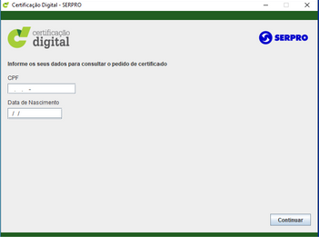
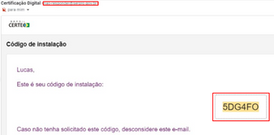

Atendimento Presencial | Videoconferência
FORMULÁRIO DE INSTALAÇÃO CERTIFICADO DIGITAL MODELO A1
Cliente/Empresa:
CPF: Data de Nascimento:
Referência:
Código de instalação:
( O código de acesso será enviado para o e-mail cadastrado ao iniciar o processo de instalação, a cada tentativa um novo código é gerado)
Email:
Senha PIN do arquivo A1:
(A senha PIN deverá ser cadastrada no ato da instalação, anote no campo abaixo, pois está senha não é recuperável.)
________________________________

CPF: Data de Nascimento:
Referência:
Código de instalação:
( O código de acesso será enviado para o e-mail cadastrado ao iniciar o processo de instalação, a cada tentativa um novo código é gerado)
Email:
Senha PIN do arquivo A1:
(A senha PIN deverá ser cadastrada no ato da instalação, anote no campo abaixo, pois está senha não é recuperável.)
________________________________
Recomenda-se realizar uma cópia de segurança para que o arquivo possa ser recuperado em casos de perda de dados, formatação do computador ou furto da máquina que armazena o certificado.
Para instalar o certificado digital siga os passos abaixo:
Para instalar o certificado digital siga os passos abaixo:


- Acesse o link https://certificados.serpro.gov.br/ins talador
- Selecione o sistema operacional Windows (não baixar o certificado digital do modelo A1 no sistema operacional MAC).
- Faça download do Instalador de Certificado Digital Serpro
- Insira o CPF e Data de nascimento do solicitante, em seguida clique em CONTINUAR, Confira se o número de referência está de acordo com os dados informados neste formulário, após prossiga incluindo o código de instalação que receberá no e-mail.
- Cadastre a senha PIN do arquivo. Esta senha deve conter exatos 6 dígitos, solicitamos que anote essa senha no formulário pois não é possível recuperá-la. Esta senha será utilizada para reinstalação do arquivo em outros dispositivos caso necessário.
- O arquivo será baixado na pasta padrão de seu computador.
- Clique na pasta para abrir o local do arquivo, com o botão direito do mouse clique em INSTALAR PFX, escolha o local que deseja salvar o arquivo
0800 940 6305
(34)3213-6305